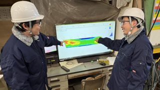
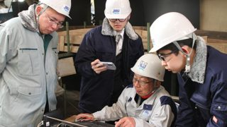
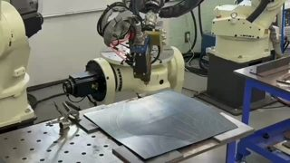
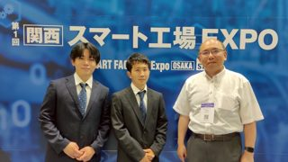
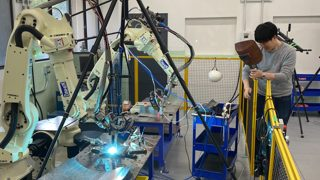
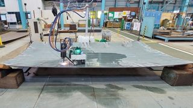

※画像は生成AIで作成したイメージです。このテーマの説明文は準備中です。
関連するページ
関連するお知らせ（題名から自動で集めたもの。11件）

報告：JMU津事業所を訪問し、柴原研究室と共同開発している AI 線状加熱ロボットの製造現場における運用状況を見学しました。
報告：JMU津事業所を訪問し、柴原研究室と共同開発している AI 線状加熱ロボットの製造現場における運用状況を見学しました。
報告：「学生実験」続報：溶接ロボットを用いて、線状加熱による“曲線焼き”を再現！ 熟練技能者の技をロボットで実現しました。
報告：第1回関西スマート工場EXPOに参加し、最新のIoT/ロボット機器等について見学しました。 新構造実験室でのロボット溶接実験の写真
新構造実験室でのロボット溶接実験の写真 第41回 日本ロボット学会におけるNEDO主催オープンフォーラムにおいて柴原研究室D1加藤拓也さんが講演した内容が、YouTube サイトにて公開されました。
第41回 日本ロボット学会におけるNEDO主催オープンフォーラムにおいて柴原研究室D1加藤拓也さんが講演した内容が、YouTube サイトにて公開されました。
2023年度 構造ダイナミクス研究所 実験室見学ツアー が開催され、溶接ロボット実験室での実験の様子が紹介されました。 第41回日本ロボット学会学術講演会が仙台国際センター(宮城県仙台市)で行われ、柴原研究室 D1加藤拓也さんが講演を行いました。
第41回日本ロボット学会学術講演会が仙台国際センター(宮城県仙台市)で行われ、柴原研究室 D1加藤拓也さんが講演を行いました。
柴原研究室とジャパンマリンユナイテッドで開発中の 「AI×線状加熱ロボット」が 「AI NEXT FORUM 2023」にて公開されることになりました。 柴原研究室、JMU等が共同開発している「AI線状加熱による板曲げ作業支援・自動化システム」がNEDO事業に採択されました。
柴原研究室、JMU等が共同開発している「AI線状加熱による板曲げ作業支援・自動化システム」がNEDO事業に採択されました。 河尻義貴、山田祐介、前川真奈海、沖見優衣らが2件の特許申請(線状加熱の自動化、修正コンター法)を行いました。
河尻義貴、山田祐介、前川真奈海、沖見優衣らが2件の特許申請(線状加熱の自動化、修正コンター法)を行いました。